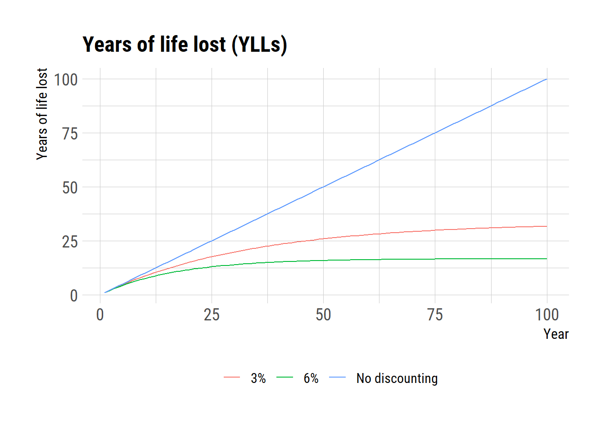
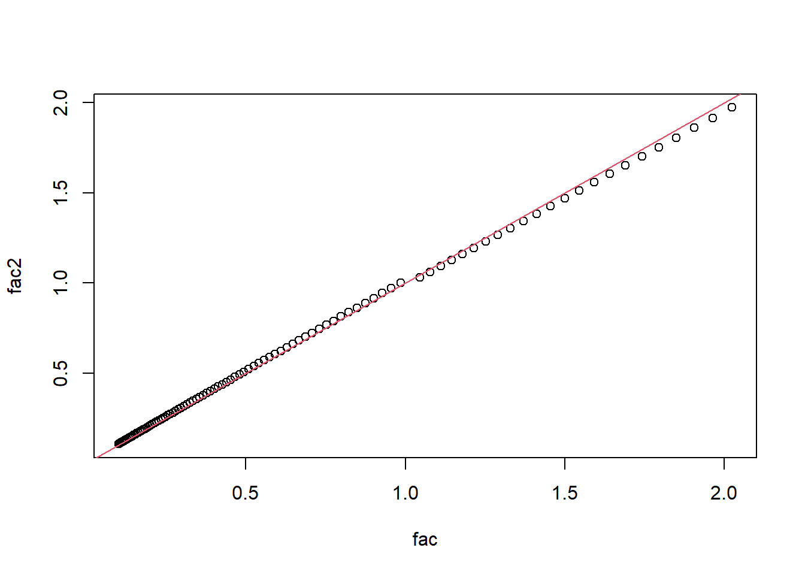
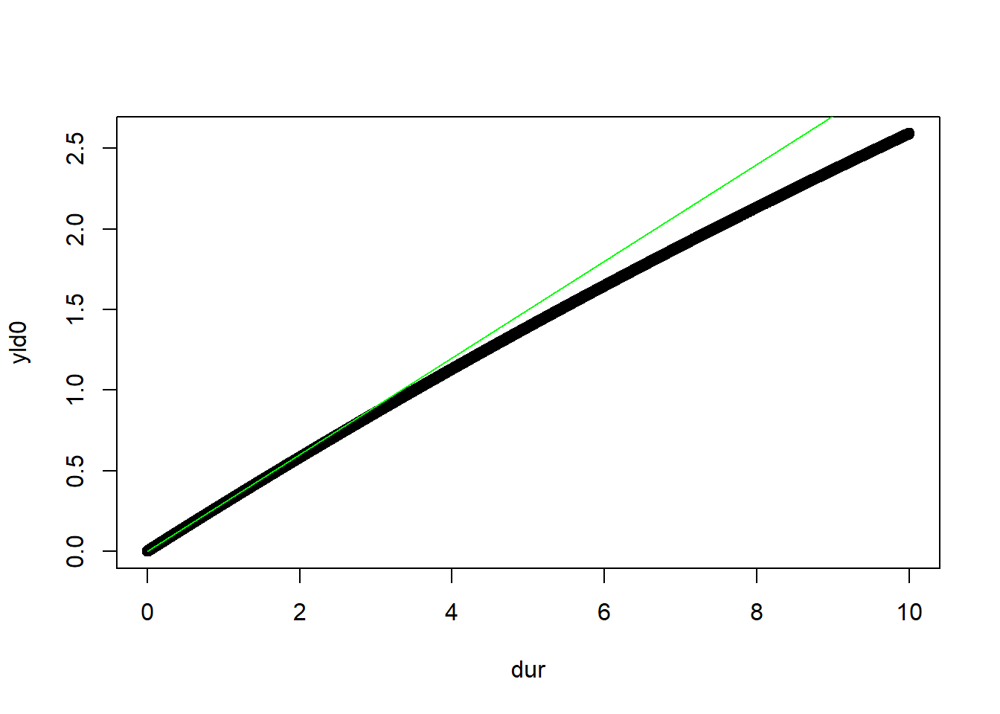

# Define the costs and effectiveness of the oral cholera vaccine (OCV) and standard treatment
cost_OCV <- 10000 # Total cost of vaccinating a population
effectiveness_OCV <- 0.5 # Reduction in cholera incidence due to vaccination
cost_standard <- 0 # Total cost of treating cholera without vaccination
effectiveness_standard <- 0 # Reduction in cholera incidence with standard treatment
# Calculate the incremental cost and effectiveness
incremental_cost <- cost_OCV - cost_standard
incremental_effectiveness <- effectiveness_OCV - effectiveness_standard
# Calculate the ICER
ICER <- incremental_cost / incremental_effectivenessIncremental Cost-Effectiveness Ratio (ICER)
cholera
sub-Saharan Africa
Understanding the Incremental Cost-Effectiveness Ratio (ICER) Through Cholera Vaccination
The Incremental Cost-Effectiveness Ratio (ICER) is a crucial metric in health economics, offering insights into the value of medical interventions by comparing their costs and effectiveness. Essentially, ICER is used to evaluate the cost-effectiveness of a new healthcare intervention compared to an existing standard of care. It is calculated as the difference in costs between two options divided by the difference in their effectiveness, typically measured in quality-adjusted life years (QALYs). This ratio helps policymakers and healthcare providers make informed decisions on allocating limited resources to maximize health benefits.
Consider the example of cholera, a severe diarrhoeal disease caused by the Vibrio cholerae bacterium, and the use of the oral cholera vaccine (OCV). In regions where cholera is endemic, introducing or expanding the use of OCV can significantly reduce the incidence of the disease. To assess the cost-effectiveness of OCV, we can compare the ICER of vaccinating a population against cholera to the standard of care, which might include treatments like rehydration solutions or antibiotics for those already infected.
Let’s explore how to calculate the ICER for introducing OCV in a hypothetical scenario using R. Assume we have data on the cost of vaccinating individuals and the effectiveness of the vaccine in preventing cholera, as well as the cost and effectiveness of the current standard cholera treatment.
Disability-adjusted life years (DALYs)
DALYs are the sum of years of life lost (YLLs) and years of life lived with disability (YLDs). Fox-Rushby and Hanson presents a somewhat involved equation for DALYs, originally by Murray.
A simpler version, which appears to be widely adopted, is takig uniform weighting across age groups and is explained by Larson.
If someone dies at time 0 and his or her life expectancy at the age is \(L\), then the YLL would be \(L\). However, better representation would account for dicounting rate over the years. The following equation representing exponential decay can be used to compute YLL while accounting for discounting rate, \(r\).
\[ YLL(r,0) = \int_{t=0}^L 1*\text{exp}(-rt) \text{d}t = \frac{1}{r}(1-\text{exp}(-rL)) \] For a commonly used \(3%\) of discount rate, the difference woul be
L <- seq(1, 100, 1)
yll1 <- L
yll2 <- (1/0.03)*(1-exp(-0.03*L))
yll3 <- (1/0.06)*(1-exp(-0.06*L))
df <- data.frame(type = rep(c("No discounting", "3%", "6%"), each=100), year=rep(L,3), val = c(yll1, yll2, yll3))
library(ggplot2)
extrafont::loadfonts("win", quiet=TRUE)
theme_set(hrbrthemes::theme_ipsum_rc(base_size=14, subtitle_size=16, axis_title_size=12))
ggplot(df, aes(x=year))+
geom_line(aes(y=val, color=type)) +
labs(title="Years of life lost (YLLs)",y="Years of life lost", x="Year", color="")+
theme(legend.position = "bottom")
refyr <- 24 # year in which the values are bsed
dr <- 0.03 # discount rate
L <- 100 # year
fac <- rep(NA, 100)
fac2 <- rep(NA, 100)
for (i in 1:L){
first_yr_dt <- (1/dr)*(1-exp(-dr)) # first year discounted < 1
# Take the 1 over its value to compute the past
if (i < refyr) {
first_yr_dt <- 1/first_yr_dt
}
fac[i] <- first_yr_dt * exp(- dr*(i - refyr))
fac2[i] <- 1/(1 + dr)^(i-refyr) # discrete time
}
fac [1] 2.0237708 1.9639593 1.9059156 1.8495872 1.7949237 1.7418757 1.6903955
[8] 1.6404367 1.5919545 1.5449051 1.4992463 1.4549369 1.4119370 1.3702079
[15] 1.3297122 1.2904132 1.2522758 1.2152654 1.1793489 1.1444939 1.1106690
[22] 1.0778437 1.0459886 0.9851489 0.9560333 0.9277783 0.9003583 0.8737487
[29] 0.8479255 0.8228655 0.7985462 0.7749456 0.7520425 0.7298162 0.7082469
[36] 0.6873151 0.6670018 0.6472889 0.6281587 0.6095938 0.5915775 0.5740938
[43] 0.5571268 0.5406612 0.5246822 0.5091755 0.4941271 0.4795234 0.4653514
[50] 0.4515982 0.4382514 0.4252991 0.4127297 0.4005316 0.3886941 0.3772065
[57] 0.3660584 0.3552397 0.3447408 0.3345522 0.3246646 0.3150694 0.3057576
[64] 0.2967211 0.2879517 0.2794414 0.2711827 0.2631680 0.2553903 0.2478423
[71] 0.2405175 0.2334091 0.2265108 0.2198164 0.2133199 0.2070153 0.2008971
[78] 0.1949597 0.1891978 0.1836061 0.1781797 0.1729137 0.1678034 0.1628440
[85] 0.1580312 0.1533607 0.1488282 0.1444297 0.1401611 0.1360188 0.1319988
[92] 0.1280976 0.1243118 0.1206378 0.1170724 0.1136124 0.1102547 0.1069961
[99] 0.1038339 0.1007652fac2 [1] 1.9735865 1.9161034 1.8602946 1.8061112 1.7535061 1.7024331 1.6528476
[8] 1.6047064 1.5579674 1.5125897 1.4685337 1.4257609 1.3842339 1.3439164
[15] 1.3047732 1.2667701 1.2298739 1.1940523 1.1592741 1.1255088 1.0927270
[22] 1.0609000 1.0300000 1.0000000 0.9708738 0.9425959 0.9151417 0.8884870
[29] 0.8626088 0.8374843 0.8130915 0.7894092 0.7664167 0.7440939 0.7224213
[36] 0.7013799 0.6809513 0.6611178 0.6418619 0.6231669 0.6050164 0.5873946
[43] 0.5702860 0.5536758 0.5375493 0.5218925 0.5066917 0.4919337 0.4776056
[50] 0.4636947 0.4501891 0.4370768 0.4243464 0.4119868 0.3999871 0.3883370
[57] 0.3770262 0.3660449 0.3553834 0.3450324 0.3349829 0.3252262 0.3157535
[64] 0.3065568 0.2976280 0.2889592 0.2805429 0.2723718 0.2644386 0.2567365
[71] 0.2492588 0.2419988 0.2349503 0.2281071 0.2214632 0.2150128 0.2087503
[78] 0.2026702 0.1967672 0.1910361 0.1854719 0.1800698 0.1748251 0.1697331
[85] 0.1647894 0.1599897 0.1553298 0.1508057 0.1464133 0.1421488 0.1380085
[92] 0.1339889 0.1300863 0.1262974 0.1226188 0.1190474 0.1155800 0.1122136
[99] 0.1089452 0.1057721plot(fac, fac2)
abline(0, 1, col=2)
dur <- seq(1e-3, 10, 0.001)
dw <- 0.3
yld0 <- dw * (1/0.03) * (1-exp(-0.03*dur))
yld1 <- dw * dur
plot(dur, yld0)
lines(dur, yld1, col="green")
A Comprehensive Assessment of Mortality and Disability from Diseases, Injuries, and Risk Factors in 1990 and Projected to 2020
This R code snippet outlines the basic calculation for ICER, where cost_OCV and effectiveness_OCV represent the cost and effectiveness of the OCV intervention, respectively, and cost_standard and effectiveness_standard represent these metrics for the standard treatment. By comparing these values, the ICER provides a dollar amount per percentage point increase in effectiveness, offering a straightforward metric for evaluating the cost-effectiveness of implementing the oral cholera vaccine in a specific population.
In summary, the ICER is a valuable tool in health economics, helping to guide decisions on the allocation of resources for interventions like the oral cholera vaccine. By quantifying the trade-offs between cost and effectiveness, ICER facilitates more informed, evidence-based choices in healthcare policy and practice.
Discounting
# Discrete version of discounting
f1 <- function(r, L){
s <- rep(NA, L)
for (i in 1:L) {
yr_discounted <- 1*1/(1+r)^(i-1)
s[i] = yr_discounted;
}
s
}
s1 = f1(0.03, 30)
tail(s1, 1)[1] 0.4243464sum(s1)[1] 20.18845# continuous version
f2 <- function(r, L){
s <- rep(NA, L)
yr0 <- 1/r * (1 - exp(-r*1))
for (i in 1:L) {
yr_discounted <- yr0*exp(-r*(i-1))
s[i] = yr_discounted
}
s
}
s2 = f2(0.03, 30)
tail(s2, 1)[1] 0.4127297sum(s2)[1] 19.78101# analytic solution for the sum of the countinus version
f3 <- function(r, L){
1/r * (1 - exp(-r*L))
}
f3(0.03, 30)[1] 19.781010.6*f3(0.03, 10)[1] 5.183636